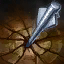
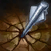

Vayne
La Cazadora Nocturna
- Vida:
- 498.44(+83 por nivel)
 Daño de Ataque:
Daño de Ataque:- 64(+1.66 por nivel)
 Velocidad de Ataque:
Velocidad de Ataque:- 0.659(+3.3% por nivel)
- Velocidad de Movimiento:
- 330
 Regeneracion de Vida:
Regeneracion de Vida:- 5.5(+0.55 por nivel)
- Armadura:
- 28(+3.4 por nivel)
 Resistencia Magica:
Resistencia Magica:- 30(+0.5 por nivel)


 


Aspectos


Habilidades
Cazadora Nocturna
Vayne caza sin piedad a los malhechores.Obteniendo 30 puntos de Velocidad de Movimiento cuando avanza hacia un campeon enemigo cercano.
Voltereta
Costo:30 de Maná
Alcance:300
Vayne realiza una voltereta y se prepara para realizar su proximo disparo.El proximo Ataque inflige daño critico.
Vayne realiza una voltereta a corta distancia e inflige NaN% Daño de Ataque de bonificacion de daño fisico en su siguiente ataque básico en los próximos 7 segundos.La bonificacion de daño de Voltereta es igual al 50/55/60/65/70% del Daño de ataque total de Vayne.
Proyectiles de Plata
Costo: Pasiva
Alcance:750
Vayne impregna sus proyectiles con un metal extraño, con efectos tóxicos para los seres malvados.El tercer ataque consecutivo o habilidad contra el mismo objetivo inflige un porcentaje de la Vida máxima del objetivo como daño verdadero adicional (máximo:200 de daño contra monstrous).
Cada tercer ataque o habilidad consecutiva que se usa contra un enemigo inflige un 4/6/8/10/12% de la vida máxima del enemigo como daño verdadero adicional (no menos de 50/65/80/95/110).Proyectiles de plata no inflige mas de 200 de daño contra monstruos.
Condena
Costo:90 de Maná
Alcance:550
Vayne extrae una pesada ballesta y dispara un enorme proyectil contra su objetivo, infligiéndole daño y haciendo que retroceda.Si impacta contra el terreno, queda empalado recibiendo daño adicional, además de quedar aturdido.
Dispara un proyectil que repele al enemigo seleccionado y le infige 50/85/120/155/190 (+50% Daño de Ataque adicional) de daño fisico.Si el enemigo colisiona contra un terreno, el daño aumenta a 50% Daño de ata que adicional y el objetivo quedará aturdido durante 1.5 segundos.El daño de Condena aumenta un 100% si el objetivo colisiona contra terreno.
Hora Final
Costo:80 de Maná
Alcance:1
Al prepararse para una confrontación épica, Vayne gana Daño de Ataque, invisibilidad durante Voltereta y el triple de bonificacion de Movimiento de Cazadora Nocturna.
Vayne obtiene 20/30/40 de bonificacion de daño de ataque, y mejoras para Cazadora Nocturna y Voltereta durante 8/10/12 segundos.La duracion de Hora Final se extenderá en 4 segundos cada vez que muera un campeón que haya recibido daño de Vayne dentro de los 3 segundos.
Cazadora Nocturna: Vayne obtiene 90 de Velocidad de Movimiento. Voltereta: Vayne también obtendrá Invisibilidad durante 1 segundo cuando dé la voltereta. Sigili,Invisibilidad:Vayne solo podrá ser revelada por torretas enemigas cercanas o Visión Verdadera.La duracion de Hora Final no se puede aumentar más de su duracion máxima original.